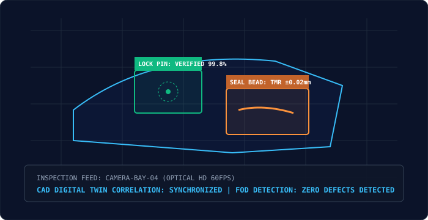

Video AI & Automated Quality Inspection
Transforming shop-floor camera feeds into real-time quality verification, shifting manufacturing from slow, manual sample-based checks to continuous, automated inline inspection.
By correlating edge optical sensors and high-speed multi-angle video feeds directly against digital twin CAD models and Bills of Process (BOP), AeroMFG AI catches micro-deviations before flight hardware advances down the assembly line.

High-Precision Visual Inspection Capabilities
Deploying specialized neural architectures trained on aerospace composite and metallurgical inspection datasets.
Aircraft-Door & Plug Inspection
Automated verification of safety-critical plug mechanisms, stop-fittings, latch pin engagement, and secondary lock cotter pins prior to fuselage closing.
- Lock pin insertion depth verified to ±0.1 mm precision.
- Instant visual alerts if retaining hardware is missing or unseated.
FOD (Foreign Object Debris) Alerting
High-resolution spatial scanning of internal cavities, fuel tanks, avionics bays, and engine intakes to detect forgotten tools, loose washers, or stray composite strands.
- Sub-millimeter particle and object detection in low-light compartments.
- Automated quarantine lock preventing airframe station advancement.
Sealant Continuity & Coating Uniformity
Multi-spectral analysis of aerodynamic sealant beads and thermal protection barrier coatings on airframes and space reentry shields.
- Continuous bead width, thickness profile, and void inspection.
- Thermal dissipation profiling under non-destructive testing (NDT).